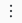

Manage groups
This article explains how admins create and manage Databricks groups. For an overview of the Databricks identity model, see Databricks identities.
Overview of group management
Groups simplify identity management by making it easier to assign access to workspaces, data, and other securable objects. All Databricks identities can be assigned as members of groups.
Difference between account groups and workspace-local groups
While users and service principals created at the workspace level are automatically synchronized to the account, groups created at the workspace level are not. Instead, Databricks has the concept of account groups and workspace-local groups.
Account groups can be granted access to data in a Unity Catalog metastore, granted roles on service principals and groups , and permissions to identity federated workspaces.
Workspace-local groups are legacy groups. These groups are identified as workspace-local in the workspace admin settings page. Workspace-local groups cannot be assigned to additional workspaces or granted access to data in a Unity Catalog metastore. Workspace-local groups cannot be granted roles on service principals. For more information on workspace-local groups, see Manage workspace-local groups (legacy).
There are two system groups in each workspace: users and admins. All workspace users are members of the users group and all workspace admins are members of the admins group. System groups are workspace-local groups. System groups cannot be deleted.
Databricks recommends turning existing workspace-local groups into account groups to take advantage of centralized workspace assignment and data access management using Unity Catalog. See Migrate workspace-local groups to account groups.
Who can manage account groups?
To create account groups in Databricks, you must be an account admin or a workspace admin. Workspace admins must be in an identity-federated workspaces to create an account group.
To manage account groups in Databricks, you must have the group manager role (Public Preview) on a group. Group managers can manage group membership and delete the group. They can also assign other users the group manager role. You can manage group roles using the account console, workspace admin settings page, and the Accounts Access Control API.
Account admins have the group manager role on the account-level, which means they have the group manager role on all groups in the account. Workspace admins have the group manager role on account groups that they create.
Workspace admins can also create and manage workspace-local groups.
Sync groups to your Databricks account from an identity provider
You can sync groups from your identity provider (IdP) to your Databricks account using a SCIM provisioning connector. For instructions, see Provision identities to your Databricks account.
Important
If you already have SCIM connectors that sync identities directly to your workspaces, you must disable those SCIM connectors when the account-level SCIM connector is enabled. See Migrate workspace-level SCIM provisioning to the account level.
Manage account groups using the account console
Account admins can add and manage groups in the Databricks account using the account console. Workspace admins and group managers can manage groups using the workspace settings page and Databricks APIs. See Manage account groups using the workspace admin settings page and Manage account groups using the API.
Add groups to your account using the account console
To add a group to the account using the account console, do the following:
As an account admin, log in to the account console.
In the sidebar, click User management.
On the Groups tab, click Add group.
Enter a name for the group.
Click Confirm.
When prompted, add users, service principals, and groups to the group.
Add members to a group using the account console
To add users, service principals, and groups to a group using the account console, do the following:
As an account admin, log in to the account console.
In the sidebar, click User management.
On the Groups tab, select the group you want to update.
Click Add members.
Search for the user, group, or service principal you want to add and select it.
Click Add.
Note
There is a delay of a few minutes between updating a group from an account and the group being updated in workspaces.
Manage roles on a group using the account console
Preview
This feature is in Public Preview.
Account admins can grant roles on account groups in the account console.
As an account admin, log in to the account console.
In the sidebar, click User management.
On the Groups tab, find and click the group name.
Click the Permissions tab.
Click Grant access.
Search for and select the user, service principal, or group and choose the Group: Manager role.
Click Save.
Change the name of a group
Account admins can update the name of account groups in using the account console:
As an account admin, log in to the account console.
In the sidebar, click User management.
On the Groups tab, select the group you want to update.
Click Group information.
Under Name, update the name.
Click Save.
Group managers cannot change name of a group using the account console. Instead, use the Account Groups API. For example:
curl --netrc -X PATCH \
https://${DATABRICKS_HOST}/api/2.0/accounts/{account_id}/scim/v2/Groups/{id} \
--header 'Content-type: application/scim+json' \
--data @update-group.json \
| jq .
update-group.json:
{
"schemas": [ "urn:ietf:params:scim:api:messages:2.0:PatchOp" ],
"Operations": [
{
{
"op": "replace",
"path": "displayName",
"value": "<updated-name>"
}
}
]
}
For information on how to authenticate to Account Groups API, see Authentication for Databricks automation - overview.
Assign a group to a workspace using the account console
To add groups to a workspace using the account console, the workspace must be enabled for identity federation. Only account groups are assignable to workspaces.
As an account admin, log in to the account console.
In the sidebar, click Workspaces.
Click your workspace name.
On the Permissions tab, click Add permissions.
Search for and select the group, assign the permission level (workspace User or Admin), and then click Save.
Assign account admin roles to a group
You cannot assign the account admin or marketplace admin role to a group using the account console, but you can assign it to groups using the Account Groups API. For example:
curl --netrc -X PATCH \
https://${DATABRICKS_HOST}/api/2.0/accounts/{account_id}/scim/v2/Groups/{id} \
--header 'Content-type: application/scim+json' \
--data @update-group.json \
| jq .
update-group.json:
{
"schemas": [ "urn:ietf:params:scim:api:messages:2.0:PatchOp" ],
"Operations": [
{
"op": "add",
"path": "roles",
"value": [
{
"value": "account_admin"
}
]
}
]
}
For information on how to authenticate to Account Groups API, see Authentication for Databricks automation - overview.
Remove groups from your Databricks account
Account admins can remove groups from a Databricks account. Group managers can also remove groups from the account using the Account Groups API, see Manage account groups using the API.
Important
When you remove a group, all users in that group are deleted from the account and lose access to any workspaces they had access to (unless they are members of another group or have been directly granted access to the account or any workspaces). Databricks recommends that you refrain from deleting account-level groups unless you want them to lose access to all workspaces in the account. Be aware of the following consequences of deleting users:
Applications or scripts that use the tokens generated by the user can no longer access Databricks APIs
Jobs owned by the user fail
Clusters owned by the user stop
Queries or dashboards created by the user and shared using the Run as Owner credential have to be assigned to a new owner to prevent sharing from failing
To remove a group using the account console, do the following:
As an account admin, log in to the account console.
In the sidebar, click User management.
On the Groups tab, find the group you want to remove.
Click the  kebab menu at the far right of the user row and select Delete.
In the confirmation dialog box, click Confirm delete.
If you remove a group using the account console, you must ensure that you also remove the group using any SCIM provisioning connectors or SCIM API applications that have been set up for the account. If you don’t, SCIM provisioning will simply add the group and its members back the next time it syncs. See Sync users and groups from your identity provider.
To remove a group from a Databricks account using the API, see Provision identities to your Databricks account and the Account Groups API.
Manage account groups using the workspace admin settings page
Workspace admins can create and manage account groups in identity-federated workspaces using the workspace admin settings page.
Note
There is a delay of a few minutes between updating an account group from a workspace and the group being updated in the account.
For information about how to create workspace-local groups in workspaces, see Manage workspace-local groups (legacy).
Create or assign a group to a workspace using the workspace admin settings page
To assign or create an account group in a workspace using the workspace admin settings page, do the following:
As a workspace admin, log in to the Databricks workspace.
Click your username in the top bar of the Databricks workspace and select Admin Settings.
Click on the Identity and access tab.
Next to Groups, click Manage.
Click Add Group.
Select an existing group to assign to the workspace or click Add new to create a new account group.
Note
If your workspace is not enabled for identity federation, you cannot assign existing account groups or add create account groups in your workspace. You must use workspace-local groups instead, see Manage workspace-local groups (legacy).
Add members to a group using the workspace admin settings page
You must be a workspace admin to add users, service principals, and groups to an account group using the workspace admin settings page. You can only manage members of a group that you have the group manager role on.
Note
You cannot add a child group to the admins group. You cannot add workspace-local groups or system groups as members of account groups.
Group managers that are not workspace admins must manage group membership using the Account Groups API.
As a workspace admin, log in to the Databricks workspace.
Click your username in the top bar of the Databricks workspace and select Admin Settings.
Click on the Identity and access tab.
Next to Groups, click Manage.
Select the group you want to update. You must have the group manager role on the group to update it.
On the Members tab, click Add members.
On the dialog, browse or search for the users, service principals, and groups you want to add and select them.
Click Confirm.
Manage roles on an account group using the workspace admin settings page
Preview
This feature is in Public Preview.
You can assign the group manager role to users, account groups, and service principals. Group managers can manage group membership. They can also assign the group manager role to other users.
You must be a workspace admin to manage group roles using the workspace admin settings page. Group managers that are not workspace admins can manage group roles using the Account Access Control API.
As a workspace admin, log in to the Databricks workspace.
Click your username in the top bar of the Databricks workspace and select Admin Settings.
Click on the Identity and access tab.
Next to Groups, click Manage.
Select the group you want to update. You must have the group manager role on the group to update it.
Click the Permissions tab.
Click Grant access.
Search for and select the user, service principal, or group and choose the Group: Manager role.
Note
You cannot assign workspace-local groups or system groups roles on account groups.
Click Save.
Assign entitlements to a group
An entitlement is a property that allows a user, service principal, or group to interact with Databricks in a specified way. Entitlements are assigned to users at the workspace level. The following table lists entitlements and the workspace UI and API property name that you use to manage each one. You can use the workspace admin settings page and workspace-level SCIM REST APIs to manage entitlements.
Entitlement name |
Entitlement API name |
Default |
Description |
|---|---|---|---|
Workspace access |
|
Granted by default. |
When granted to a user or service principal, they can access the Data Science & Engineering and Databricks Machine Learning persona-based environments. Can’t be removed from workspace admins. |
Databricks SQL access |
|
Granted by default. |
When granted to a user or service principal, they can access Databricks SQL. |
Allow unrestricted cluster creation |
|
Not granted to users or service principals by default. |
When granted to a user or service principal, they can create unrestricted clusters. You can restrict access to existing clusters using cluster-level permissions. Can’t be removed from workspace admins. |
Allow pool creation (not available via UI) |
|
Can’t be granted to individual users or service principals. |
When granted to a group, its members can create instance pools. Can’t be removed from workspace admins. |
The users group is granted the Workspace access and Databricks SQL access entitlements by default. All workspace users and service principals are members of the users group. To assign these entitlements on a user-by-user basis, a workspace admin must remove the entitlement from the users group and assign it individually to users, service principals, and groups.
Important
To log in and access a Databricks workspace, a user must have the Databricks SQL access or Workspace access entitlement.
You cannot grant the allow-instance-pool-create entitlement using the admin settings page. Instead, use the Workspace Users, Service Principals, or Groups API.
Add or remove an entitlement for a group using the workspace admin settings page
You manage group entitlements at the workspace level, regardless of whether the group was created in the account or is workspace-local.
As a workspace admin, log in to the Databricks workspace.
Click your username in the top bar of the Databricks workspace and select Admin Settings.
Click on the Identity and access tab.
Next to Groups, click Manage.
Select the group you want to update. You must have the group manager role on the group to update it.
On the Entitlements tab, select the entitlement you want to grant to all users in the group.
To remove an entitlement, perform the same steps, but deselect the toggle instead. Group members lose the entitlement, unless they have permission granted as an individual user or through another group membership.
View parent groups
As a workspace admin, log in to the Databricks workspace.
Click your username in the top bar of the Databricks workspace and select Admin Settings.
Click on the Identity and access tab.
Next to Groups, click Manage.
Select the group you want to view.
On the Parent group tab, view the parent groups for your group.
Remove a group from a workspace using the workspace admin settings page
Removing a group from a workspace does not delete the group in the account. To remove a group from the account, use the Account Groups API.
As a workspace admin, log in to the Databricks workspace.
Click your username in the top bar of the Databricks workspace and select Admin Settings.
Click on the Identity and access tab.
Next to Groups, click Manage.
Select the group and click x Delete
Click Delete to confirm.
Manage account groups using the API
Account admins and workspace admins and group managers can add, delete, and manage groups in the Databricks account using the Account Groups API. Account admins and workspace admins and group managers must invoke the API using a different endpoint URL:
Account admins use
{account-domain}/api/2.0/accounts/{account_id}/scim/v2/.Workspace admins and group managers use
{workspace-domain}/api/2.0/account/scim/v2/.
For details, see the Account Groups API.
Assign a group to a workspace using the API
Account and workspace admins can use the Workspace Assignment API to assign groups to workspaces enabled for identity federation. The Workspace Assignment API is supported through the Databricks account and workspaces.
Account admins use
{account-domain}/api/2.0/accounts/{account_id}/workspaces/{workspace_id}/permissionassignments.Workspace admins use
{workspace-domain}/api/2.0/preview/permissionassignments.
Manage roles for a group using the API
Preview
This feature is in Public Preview.
Groups managers can manage group roles using the Accounts Access Control API. Account admins and workspace admins and group managers must invoke the API using a different endpoint URL:
Account admins use
{account-domain}/api/2.0/preview/accounts/{account_id}/access-control/assignable-roles.Workspace admins and group managers use
{workspace-domain}/api/2.0/preview/accounts/access-control/assignable-roles.
See Account Access Control API and Accounts Access Control Workspace Proxy API.